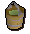
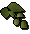
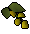
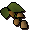
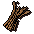
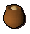
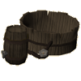
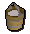

")
Cooking - Methods
Introduction | Baking | Brewing - Members Only | Churning - Members Only
Baked Potatoes | Miscellaneous Methods
Baked Potatoes | Miscellaneous Methods
Introduction
There are many different methods of Cooking and a variety of base ingredients to use to make your foods complete. As your skill increases, you will find yourself able to make more complicated types of food. For the skill requirements of these foods please see the Non-Members' or Members' food sections.
Baking
To make flour you first need to gather grain from a field, then, after making sure you have an empty pot in your inventory, find a windmill. Windmills are located on the map by the windmill symbol
Once in a windmill, go to the top floor and use the grain with the hopper. Click on the controls to operate them, then go down to the bottom floor and collect the flour from the flour bin into your empty pot.
Use the pot of flour with the bucket (or jug) of water. You will then get the option to make bread dough, pitta bread dough, pastry dough, or pizza dough.
| Bread | Pitta Bread |
![[image]](../../img/main/kbase/items/food/baked/bread.gif) |
![[image]](../../img/main/kbase/items/food/baked/pitta_bread.gif) |
|
|
| Pies | Pizza |
![[image]](../../img/main/kbase/items/food/baked/apple_pie.gif) |
![[image]](../../img/main/kbase/items/food/baked/plain_pizza.gif) |
|
|
| Cake | Chocolate Cake |
![[image]](../../img/main/kbase/items/food/baked/cake.gif) |
![[image]](../../img/main/kbase/items/food/baked/chocolate_cake.gif) |
|
|
Brewing - Members Only
Hops are an important ingredient in the brewing process. Hops can be grown through Farming or bought from other players or the Grand Exchange. With hops, cooks can use their skills to brew a selection of drinks, either saving them the costs of buying them from a bar, or making an entirely new drink, which can be used, or sold to players to help temporarily boost skills.
Through brewing you are introduced to a variety of alcohols which can be brewed in the breweries of Keldagrim and Port Phasmatys.

|

|
Below are the varieties of alcohol that can be made. For the effects these drinks have on your character when drunk, please see the Cooking Drinks section.
| Drink | Main Ingredient | Main Ingredient Obtained |
![[image]](../../img/main/kbase/items/food/drink/cider.gif) Cider Cider |
4 x Buckets of apple mush | Player-made (see instructions below) |
![[image]](../../img/main/kbase/items/food/drink/dwarven_stout.gif) Dwarven Stout Dwarven Stout |
4 x Hammerstone hops | Grown using the Farming skill |
![[image]](../../img/main/kbase/items/food/drink/asgarnian_ale.gif) Asgarnian Ale Asgarnian Ale |
![[image]](../../img/main/kbase/items/seeds/asgarnian_hops.gif) 4 x Asgarnian hops 4 x Asgarnian hops |
Grown using the Farming skill |
| Greenman's Ale | 4 x Harralander | Monster drop / Grown using the Farming skill |
![[image]](../../img/main/kbase/items/food/drink/wizards_mind_bomb.gif) Wizard's Mind Bomb Wizard's Mind Bomb |
4 x Yanillian hops | Grown using the Farming skill |
![[image]](../../img/main/kbase/items/food/drink/dragon_bitter.gif) Dragon Bitter Dragon Bitter |
4 x Krandorian hops | Grown using the Farming skill |
![[image]](../../img/main/kbase/items/food/drink/moonlight_mead.gif) Moonlight Mead Moonlight Mead |
![[image]](../../img/main/kbase/items/offspring/bittercap_mushroom.gif) 4 x Bittercap mushrooms 4 x Bittercap mushrooms |
Grown in the mushroom patch west of Canifis |
![[image]](../../img/main/kbase/items/food/drink/axemans_folly.gif) Axeman's Folly Axeman's Folly |
![[image]](../../img/main/kbase/items/offspring/oak_roots.gif) 1 x Oak root 1 x Oak root |
Growing your own oak, chopping it down and digging up the roots |
![[image]](../../img/main/kbase/items/food/drink/chefs_delight.gif) Chef's Delight Chef's Delight |
4 x Chocolate dust | Bought from Grand Tree |
![[image]](../../img/main/kbase/items/food/drink/slayers_respite.gif) Slayer's Respite Slayer's Respite |
![[image]](../../img/main/kbase/items/seeds/wildblood_hops.gif) 4 x Wildblood hops 4 x Wildblood hops |
Grown using the Farming skill |
How to Brew
To brew, you will need to obtain barley and a pot of ale yeast. The barley can be bought from other players or grown in a hops patch (see the Farming skill guide), while the pot of ale yeast can be bought from the local brewers.
 |
+ |  |
+ | Main ingredient | + |  | Into |  |
- Add two buckets of water to a fermenting vat.
- Add two lots of barley malt (this is made by using barley on a Cooking range) to the fermenting vat.
- Add the main ingredient to the fermenting vat.
- Lastly, add a pot of ale yeast.
- Wait for several days (depending on the type of drink you are brewing).
- Turn the valve to let the liquid run into the barrel.
- Now simply use either a calquat keg or a beer glass on the barrel to empty the contents.
How to Brew Cider
To start brewing you will need four buckets of apple mush. To obtain a bucket of apple mush, you will need four cooking apples, and an empty bucket to collect the apple mush in. All these items need to be in your inventory for you to successfully follow the apple mushing process detailed below.
 |
+ |  |
= |
- Use the cooking apples with the apple barrel (which can be found near a fermenting vat) and your character will begin to squash the apples.
- After the apples are squashed, the mush will automatically be collected into your empty bucket.
Repeat steps 1 and 2 until you have enough buckets of apple mush.
Now you have collected your apple mush, you just need to grab a pot of ale yeast and you are ready to start brewing cider. Follow the recipe detailed below to begin.
| + | Into |
- First, add the buckets of apple mush to the fermenting vat.
- Add a pot of ale yeast
- Now sit back and wait.
When the yeast has been added, the mixture will begin to ferment. This process can take up to a day, so be prepared to just leave it and go do something else while you are waiting. Eventually, the ale or cider will be ready for drinking – turn the valve on the vat and the barrel will fill up. It is possible that occasionally your cider will turn bad while brewing - if this should prove to be the case, there is nothing you can do other than empty the vat and start again. You can then fill up to eight beer glasses from the barrel.
Alternatively, scoop the flesh out of a calquat fruit with a knife and you have a calquat keg that can hold four pints by itself!
Calquat fruits can be obtained by trading with another player or growing your own calquat tree and picking the fruit using the Farming skill.
Mature Ales
Mature ales are obtained when brewing. The chances of producing a mature ale when brewing is completely random, it does not depend on the amount of time the beer is left fermenting. You can only brew mature ales by brewing the normal states. For example, to obtain a mature Dragon Bitter, you will have to obtain the ingredients and brew Dragon Bitter. If you are lucky, you may obtain mature Dragon Bitter when it has fully fermented.
Due to the extra potency of a matured ale, you may find that the changes it makes to your skills will increase. For example, a mature Dwarven Stout will boost your Mining and Smithing levels by 2, instead of the standard 1.
The 'Stuff'
Those who have bought the 'stuff' from Honest Jimmy after participating in the Trouble Brewing will have an advantage when brewing ales (does not work on cider).
Follow the same steps as you do in normal brewing; however, after you have added the barley malt, add the 'stuff' to the vat, and then continue with the normal method again (add your hops, then yeast).
The 'stuff' will give you a 50% chance of brewing a mature ale of the type you are brewing.
Churning - Members Only
Churns can be used in the production of dairy products such as cream, butter and cheese, which can in turn be used in conjunction with other foods to create things like pizzas and baked potatoes with toppings, which typically taste better and restore more life points.
The process of churning can turn milk into cream, cream into butter, and butter into a wheel of cheese, but you don't need to do these things in turn. You can, for instance, directly churn a bucket of milk into cheese, but you cannot churn a wheel of cheese back into milk, butter or cream. As such, you can use a churn if you have a bucket of milk, a pot of cream or a pat of butter in your inventory; which of these you have in your inventory determines what you will be able to produce with a churn.
| Name | Item Churned | Level Required | Experience Gained |
|  Bucket of milk | ![[image]](../../img/main/kbase/items/food/other/pot_of_cream.gif) Cream Cream |
21 |
18 |
![[image]](../../img/main/kbase/items/food/other/pat_of_butter.gif) Butter Butter |
38 |
40.5 | |
![[image]](../../img/main/kbase/items/food/other/cheese_wheel.gif) Cheese wheel Cheese wheel |
48 |
64 | |
| Pot of cream |
Butter |
38 |
22.5 |
| Cheese wheel |
48 |
46 | |
| Pat of butter |
Cheese wheel |
48 |
23.5 |
Using a knife on a cheese wheel will allow you to cut wedges of cheese from it - you can either cut wedges one at a time or cut the entire wheel, which will yield a random number of wedges of cheese. Cheese wheels cannot be eaten directly; wedges of cheese can be eaten, and are what is needed for any recipes involving cheese. Each wedge of cheese that you cut from a wheel earns you 4 Cooking XP.
Locations of Churns
You can find the churns in the following locations:
- Inside the Make Over Mage's house. Nearest dairy cows are next to the Crafting Guild.
- Inside Frenita's restaurant in Yanille. Nearest dairy cow is north of Yanille.
- Inside the mill in Zanaris. Nearest dairy cow is in a field in Zanaris.
- In a farm building, north of Ardougne. Nearest dairy cow is in cow field nearby.
- In building next to fenced area with cow and chickens in Rellekka. Nearest dairy cow is in this fenced area.
- Next to the shed in Sinclair Mansion garden. Nearest dairy cow is in the south west of the garden.
- In farm building south of Falador. Nearest dairy cow is in the field, north of the farmhouse.
- In farm building to the north-west of Lumbridge. Nearest dairy cow is to the north of the nearby windmill.
- In farm building to the north of Lumbridge, opposite a large field full of cows. Nearest dairy cow is in said field.
- On the first floor of the Cooking Guild. Not particularly near any cows - the nearest dairy cows are probably the Lumbridge or Falador ones.
Baked Potatoes
![[image]](../../img/main/kbase/items/food/baked/potato_baked.gif) Both delicious and nutritious, baked potatoes can be simple to create or divinely complex, depending on the flavours you enjoy and the amount you'd like to bolster your life points by.
Both delicious and nutritious, baked potatoes can be simple to create or divinely complex, depending on the flavours you enjoy and the amount you'd like to bolster your life points by.
Using a potato on a Cooking range will make a baked potato. Baked potatoes cannot be made using a fire, they will always burn - please see the Members Food section for details of the required level to cook the different variations of potatoes.
| Buttered Potato | Potato with Cheese |
![[image]](../../img/main/kbase/items/food/baked/potato_buttered.gif) |
![[image]](../../img/main/kbase/items/food/baked/potato_cheese.gif) |
| To make a buttered potato, use a pat of butter with a baked potato. |
|
| Chilli Potato | Egg Potato |
![[image]](../../img/main/kbase/items/food/baked/potato_chillicarne.gif) |
![[image]](../../img/main/kbase/items/food/baked/potato_tomatoegg.gif) |
|
|
| Mushroom Potato | Tuna Potato |
![[image]](../../img/main/kbase/items/food/baked/potato_mushroomonion.gif) |
![[image]](../../img/main/kbase/items/food/baked/potato_tunasweetcorn.gif) |
|
|
Miscellaneous Methods
| Fish | Meat |
![[image]](../../img/main/kbase/items/food/fish/shark.gif) |
![[image]](../../img/main/kbase/items/food/meat/meat.gif) |
|
|
| Ugthanki Kebab | Oomlie Wrap |
![[image]](../../img/main/kbase/items/food/meat/ugthanki_kebab.gif) |
![[image]](../../img/main/kbase/items/food/meat/oomlie_wrap.gif) |
|
|
| Stew | Curry |
![[image]](../../img/main/kbase/items/food/baked/stew.gif) |
![[image]](../../img/main/kbase/items/food/baked/curry.gif) |
|
|
| Chilli Con Carne | Scrambled Egg and Tomato |
![[image]](../../img/main/kbase/items/food/baked/bowl_chilliconcarne.gif) |
![[image]](../../img/main/kbase/items/food/baked/bowl_scrambledegg.gif) |
|
|
| Fried Mushrooms and Fried Onions | Tuna and Sweetcorn |
![[image]](../../img/main/kbase/items/food/baked/bowl_mushroom_onion.gif) |
![[image]](../../img/main/kbase/items/food/baked/bowl_tunasweetcorn.gif) |
|
|
Click here to view the Cooking FAQs

More articles in
Cooking
|
|
|
Further Help
If this article does not help you, you may find the following sections of the RuneScape site helpful:
|
|